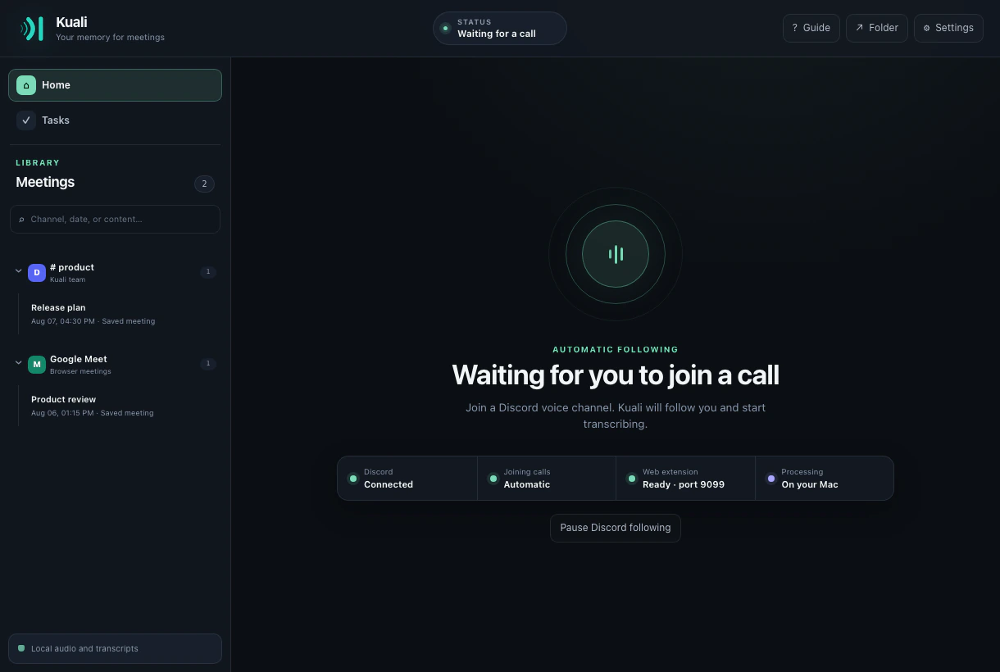

Follow or invite
Kuali can follow the configured Discord user automatically, or anyone in a voice channel can invite it with /record or /grabar.
Kuali joins voice channels as a bot, receives each participant separately, and transcribes the conversation live on your computer. No system-audio recording and no cloud transcription account.

Generic recorders capture the device output and later try to infer speakers from a single waveform. Kuali uses Discord's participant streams directly, preserving the platform user ID, display name, avatar, timing, and voice channel context from capture to transcript.
Kuali can follow the configured Discord user automatically, or anyone in a voice channel can invite it with /record or /grabar.
Silero removes non-speech audio before Whisper decodes each participant. The live view shows who is speaking and the text attached to them.
The meeting becomes a searchable local record and, when configured, a polished Discord card with tasks and private paginated views.
Every Discord user is tracked with a string-safe platform ID. Joining late, changing activity, sharing a screen, or temporarily stopping speech does not create a new anonymous speaker. Separate call sessions also keep independent participants and clocks.
This platform identity lets Kuali assign tasks to a participant, filter work by person, show avatars, and preserve exactly who said each transcript segment.
When Kuali joins, it plays and posts the configured disclosure. Participants who arrive later hear the same notice, and an append-only audit log records participant arrivals and notice times. Kuali excludes its own announcement from transcription.
Kuali can publish one compact meeting card while the optional summary is prepared and update that same message when processing finishes. Buttons open the summary, key points, decisions, open questions, and paginated transcript privately, while downloadable text files preserve the complete output.
Inside the desktop app, every meeting remains searchable by channel, date, participant, title, and words from the transcript.
Discord audio is processed in memory. Silero voice activity detection and Whisper run locally, and Kuali does not keep an audio recording. Meeting data stays in Kuali's local application directory until you delete it.
Summaries are optional. A transcript reaches an external LLM only when you enable summaries and configure that provider yourself.
Signed Standard Webhooks can subscribe globally or to one Discord channel. The meeting.completed event contains participants, timestamped transcript, summary status, insights, and tasks—never the original audio.
Yes. Discord provides a separate stream and stable identity for each user, allowing Kuali to preserve attribution without guessing from mixed system audio.
No. Raw audio is processed in memory by Silero and Whisper. Kuali stores the transcript and meeting record, not an audio recording.
Kuali registers the participant, plays the disclosure for them, records that notice in the consent log, and begins processing their separate voice stream.
No. Live and stored transcription work locally without an LLM. Summary and task delivery can be disabled entirely.
Kuali walks through creating the bot, pasting its token and your username, and authorizing the selected server with only the permissions it needs.